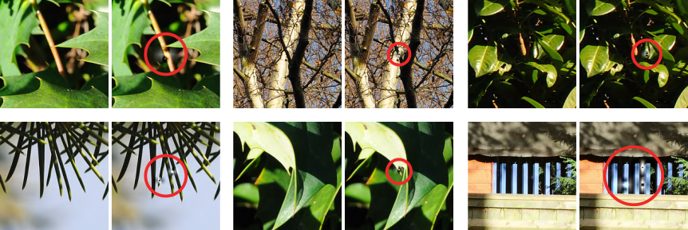

Theory overview¶
This part of the documentation describes the underlying theory and techniques used by this software, some of which are original.
The objective of this software is to ensure implementations of VC-2 use a sufficient number of bits in their arithmetic to avoid integer wrap-around or saturation errors. The examples below show the effects of insufficient bit depth in a real VC-2 codec:
Though the Discrete Wavelet Transform (DWT) underlying VC-2 is linear, the integer arithmetic and quantisation make VC-2 a non-linear filter. Computing the worst-case signal ranges for non-linear filters is not practical in general. Instead, as discussed in Related work, implementers typically resort to either wasteful over-allocation of bits or error-prone empirical testing to determine the number of bits required.
This software uses Affine Arithmetic (AA), as described in Computing signal bounds with Affine Arithmetic, to find hard upper-bounds on signal ranges. While AA-based bounds are guaranteed not to under-estimate the true signal range, they typically over-estimate the true signal range.
The magnitude of the over-estimates produced by AA is strongly related to the magnitude of the non-linearity in the filter. In an analysis filter, for example, the only non-linearities arise from rounding errors which tend to be small, making the AA over-estimate small as well. Quantisation, however, can introduce substantial errors and so, post-quantisation, AA tends to produce fairly large over-estimates. This effect is quantified in Quantisation and affine arithmetic.
In Refining worst-case quantisation error bounds, a refinement to the way the worst-case bounds of VC-2’s quantiser are calculated is presented, reducing the over-estimates produced by AA.
Since AA produces large over-estimates, this software also attempts to generate synthetic test patterns which elicit realistic, near-worst-case signal values. These test signals are generated by an original heuristic described in Test pattern generation. These test patterns have been found to produce significantly larger signal values than natural images or random noise in practice in experiments described in Experimental results.